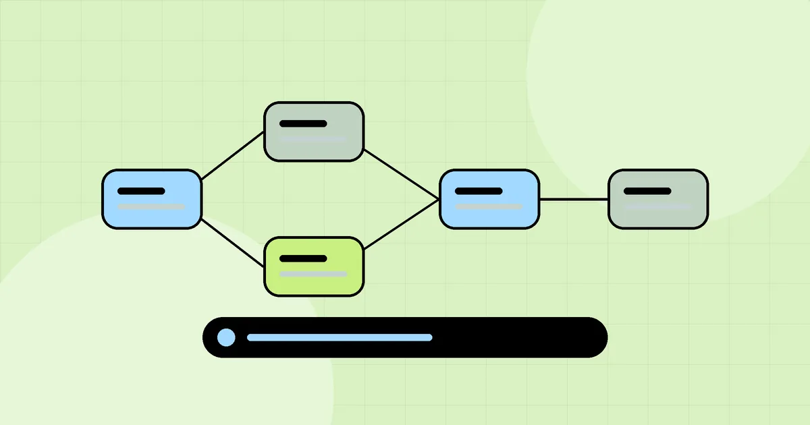
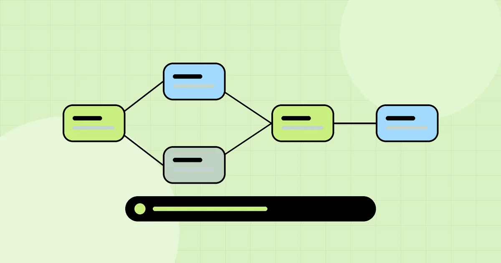
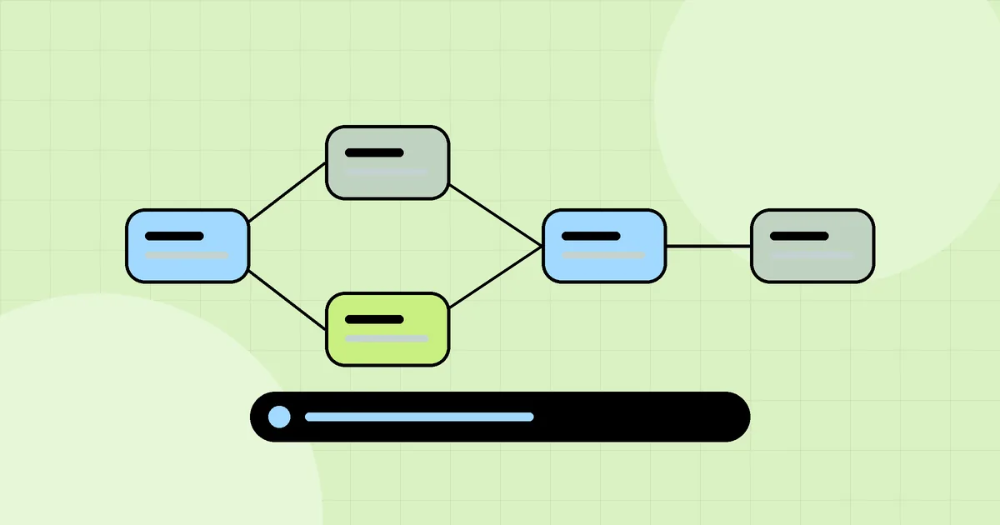
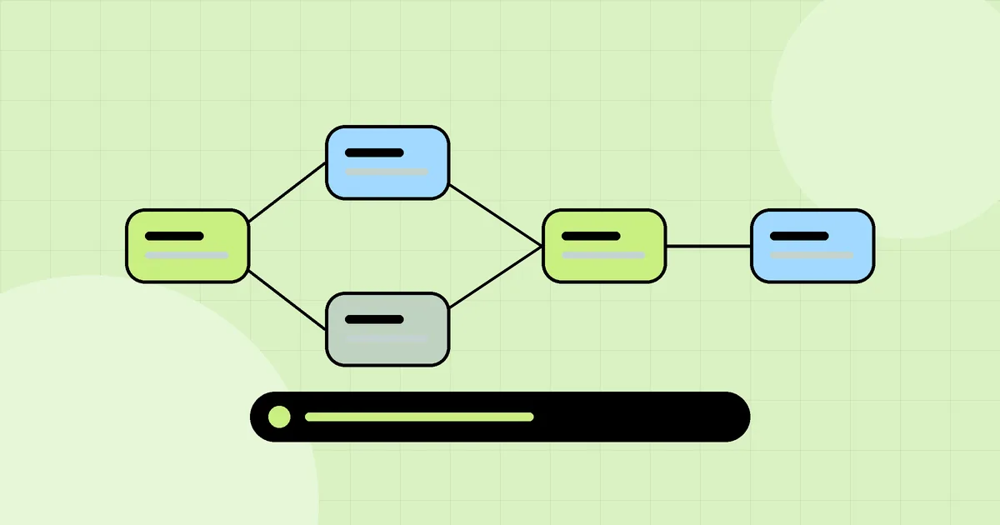
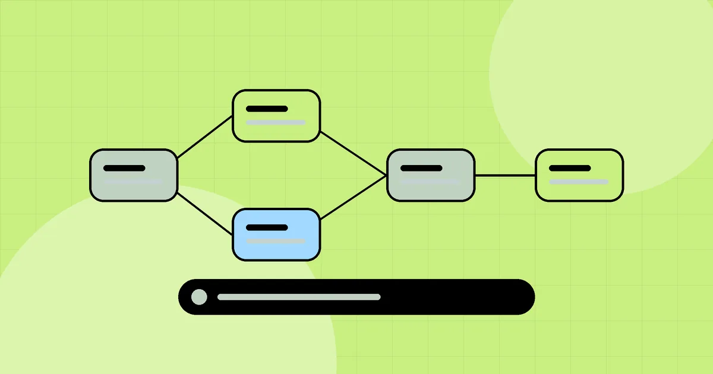
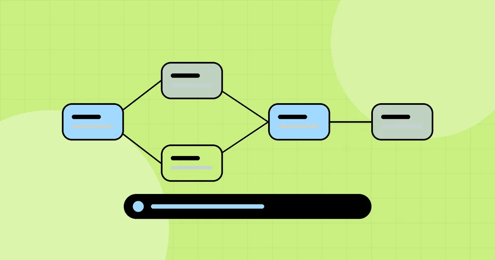
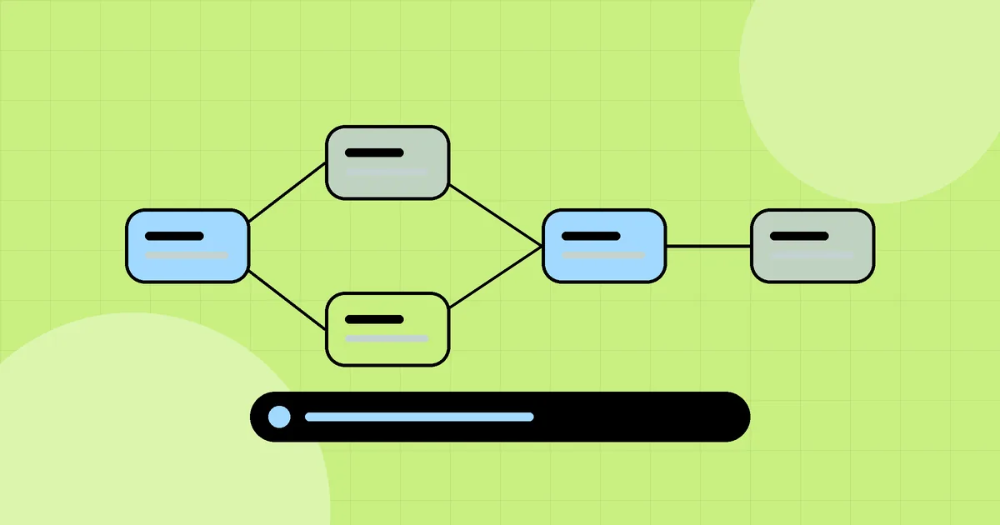

How Much Does a Mobile App Cost in Dubai? What Really Drives the Price
Wondering what a mobile app costs in Dubai? Rather than guess a number, here are the factors that actually decide the price and how to budget sensibly.
Read article →Our Blog
Thoughts on design, technology, CRM, and the craft of building great brands for UAE businesses.
Wondering what a mobile app costs in Dubai? Rather than guess a number, here are the factors that actually decide the price and how to budget sensibly.
Read article →Choosing between WordPress, Wix, Shopify and a custom-built website for a UAE business? Here is a practical way to decide based on goals, growth and budget.
Read article →Not every CRM feature is worth paying for. Here are the CRM features a UAE small business actually needs, and the ones you can safely skip.
Read article →
Web DevA CRM is only as useful as the tools it connects to. These are the most valuable CRM integrations for UAE businesses and what each one makes possible.
Read article →Which features make a business mobile app genuinely useful? A practical look at the best mobile app features for companies in the UAE in 2026.
Read article →Native iOS and Android or one cross-platform codebase? Here is how to choose the right approach for your mobile app project in Dubai.
Read article →A good-looking website is not enough. These 12 website features actually turn visitors into enquiries for businesses in Dubai and the UAE.
Read article →Construction and contracting businesses juggle tenders, quotations, projects and clients. Here is what the best CRM for UAE contractors should include.
Read article →Is your website holding your business back? Here are nine clear signs it is time for a redesign, and what a good redesign should fix.
Read article →Travel agencies and tour operators need more than a contact list. Here is what a tourism CRM should handle, from packages and visas to suppliers and payments.
Read article →ERP vs CRM explained for UAE businesses: what each system does, the signs you need one first, and how to sequence both without wasting budget.
Read article →
Web DevHow CRM and ERP integration works for UAE businesses: what data to sync, common approaches, pitfalls, and how to build one shared source of truth.
Read article →A practical 10-step ERP implementation checklist for UAE small and mid-size businesses: scoping, data cleanup, VAT readiness, training, and go-live.
Read article →A step-by-step guide for UAE teams moving from Excel spreadsheets to a CRM: cleaning data, mapping fields, importing, and getting staff to actually use it.
Read article →Which KPIs to track to measure CRM ROI in the UAE: lead response time, conversion rate, sales cycle length, follow-up rate, and how to calculate payback.
Read article →ERP inventory management features for Dubai trading and distribution companies: multi-warehouse stock, batch tracking, reorder alerts, and VAT-ready invoicing.
Read article →A factual evaluation guide for choosing a logo design company in Dubai — process, revision terms, and file ownership explained by Zenexio.
Read article →A complete, itemized breakdown of graphic design services in Dubai — logo, print, digital, and packaging — explained by Zenexio.
Read article →What app store optimization (ASO) actually involves — keywords, visuals, and conversion — and why it matters as much as app development itself.
Read article →What website maintenance services in Dubai should include — security updates, backups, performance monitoring, and content changes. A guide from Zenexio.
Read article →What makes a landing page actually convert — structure, messaging, and testing. A factual guide to landing page design services in Dubai from Zenexio.
Read article →What a digital business card is, how it works, and why Dubai businesses are adopting them — a factual guide from Zenexio.
Read article →A guide to print and marketing collateral design in Dubai — brochures, flyers, and posters — and when each format is actually worth the investment.
Read article →Real 2026 price ranges for logo design in the UAE — what drives the cost, and how to avoid overpaying or underpaying. A guide from Zenexio.
Read article →A factual guide to conversion rate optimization (CRO) in Dubai — what it involves, common issues, and how to start improving conversions.
Read article →A criteria-based framework for identifying the best logo design company in Dubai — process, portfolio depth, and ownership terms.
Read article →A factual checklist for identifying the best website design company in Dubai — ownership, process, and portfolio depth, not just marketing claims.
Read article →A buyer's checklist for identifying the best web development company in Dubai — ownership, technical depth, and process, from Zenexio.
Read article →A factual framework for identifying the best branding agency in Dubai — strategy process, file ownership, and portfolio relevance.
Read article →What "IT company" actually covers in Dubai, and how to find the best fit for your specific need — from hardware support to custom software.
Read article →What a complete IT support company in Dubai should provide — proactive monitoring, response times, and scope clarity.
Read article →What to check before hiring a signage company in Dubai — brand consistency, material choice, and permit requirements.
Read article →What makes billboard advertising in Dubai actually work — design principles, placement strategy, and how it fits a broader campaign.
Read article →How to plan a coordinated outdoor advertising (OOH) campaign in Dubai — format selection, placement, and integration with digital channels.
Read article →What effective vehicle branding and car wrap design in Dubai requires — layout, material, and brand consistency. A guide from Zenexio.
Read article →How to design corporate gifting in Dubai as a genuine brand touchpoint — packaging, custom items, and occasions that matter in the UAE market.
Read article →What effective exhibition stand design in Dubai actually requires — visibility, brand consistency, and visitor flow. A guide from Zenexio.
Read article →Custom vs off-the-shelf HR software in Dubai — what each option offers, and how UAE-specific labour law requirements affect the decision.
Read article →What payroll software in Dubai needs to handle — WPS compliance, gratuity calculations, and multi-entity support. A guide from Zenexio.
Read article →Where SMS marketing still genuinely works in Dubai despite WhatsApp dominance — transactional messages, appointment reminders, and time-sensitive offers.
Read article →What on-demand and booking app development in Dubai requires — real-time matching, tracking, and payment integration. A guide from Zenexio.
Read article →What e-commerce product photography in Dubai actually needs to convert — lighting, consistency, and platform requirements. A guide from Zenexio.
Read article →A factual guide to evaluating professional product photography studios in Dubai — equipment, process, and what a written scope should cover.
Read article →A factual framework for evaluating a PPC agency in Dubai — account structure, transparency, and reporting standards, from Zenexio.
Read article →A complete, itemized breakdown of pay-per-click advertising services in Dubai — account setup, campaign management, landing pages, and reporting.
Read article →A criteria-based framework for identifying the best PPC company in Dubai — account transparency, structure, and proven reporting standards.
Read article →A factual evaluation guide for choosing among email marketing companies in Dubai — segmentation, automation, deliverability, and reporting standards.
Read article →A complete, itemized breakdown of email marketing services in Dubai — strategy, automation, design, deliverability, and reporting.
Read article →Custom vs off-the-shelf POS software in Dubai — what each option actually offers, and how to decide, from Zenexio.
Read article →A factual evaluation guide for hiring a video production company in Dubai — process, equipment, and how to judge a demo reel properly.
Read article →A breakdown of corporate video production services in Dubai — brand films, explainer videos, testimonials, and training content — from Zenexio.
Read article →What a genuine influencer marketing agency in Dubai should deliver — creator vetting, campaign strategy, and performance reporting.
Read article →What a genuine content marketing agency in Dubai should deliver — strategy, SEO-aligned writing, and measurable outcomes. A guide from Zenexio.
Read article →A complete, factual framework for identifying the best SEO company in Dubai — technical audits, reporting standards, local SEO, and red flags to avoid.
Read article →A factual evaluation checklist for finding the best social media agency in Dubai — content quality, engagement, paid social, and reporting standards.
Read article →A complete, itemized breakdown of SEO services in Dubai — technical SEO, local SEO, content, link building, and reporting — from Zenexio.
Read article →A channel-by-channel breakdown of the best digital marketing services in Dubai — SEO, paid media, social, and WhatsApp — from Zenexio.
Read article →A factual evaluation framework for choosing among ERP companies in Dubai — implementation process, customization depth, and ownership terms.
Read article →What supply chain management ERP software should actually deliver — inventory visibility, procurement, and logistics integration — explained by Zenexio.
Read article →
Web DevA factual, criteria-based framework for identifying the best ERP software solution provider in Dubai — implementation process, ownership, and support.
Read article →Choosing an SEO agency in Dubai? A guide to what real SEO results look like, how to evaluate an agency, and red flags to avoid — from Zenexio.
Read article →A framework for evaluating the best social media marketing company in Dubai — beyond follower counts, toward real engagement and conversions.
Read article →What genuinely good web design in Dubai looks like — usability, conversion, and mobile-first UX, beyond just visual polish. A guide from Zenexio.
Read article →What a genuinely full-service digital agency in Dubai should offer — web, design, marketing, and strategy under one roof. A guide from Zenexio.
Read article →A clear breakdown of branding services in Dubai — logo design, brand strategy, guidelines, and collateral — explained individually by Zenexio.
Read article →A genuine framework for finding the best CRM software in Dubai for your business — not just another ranked list of the same subscription platforms.
Read article →What to check before hiring an e-commerce website development company in Dubai — platform choice, payment integration, and scalability. A guide from Zenexio.
Read article →Full-service marketing agency or digital-only specialist? A clear comparison for businesses evaluating a marketing agency in Dubai, from Zenexio.
Read article →An agency's honest breakdown of the best AI video generator tools in 2026 — generators, editors, and creation suites — and where each actually fits a brand workflow.
Read article →Zenexio builds custom mobile apps for iOS and Android in Dubai, UAE — full ownership, no template shortcuts, and a discovery-first development process.
Read article →Explore what to look for in a leading mobile app development company in Dubai, from full code ownership and discovery to UI/UX, backend engineering, and support.
Read article →A framework for comparing top mobile app development companies in Dubai — process, ownership terms, and technical evaluation, from Zenexio.
Read article →A clear breakdown of what a mobile app development company in Dubai should offer — design, development, backend, and launch support. A guide from Zenexio.
Read article →
Web DevA framework for judging the best mobile app development agencies in Dubai — beyond the portfolio, toward process, ownership, and real technical depth.
Read article →A 2026 breakdown of the 11 types of creative design agencies operating in Dubai — from boutique studios to full-service partners — and how to choose the right one.
Read article →Zenexio builds custom CRM systems with an integrated client portal, so customers can self-serve on orders, invoices, and support without emailing your team. Built for Dubai and UAE businesses.
Read article →A practical guide for small business owners in Dubai and the UAE buying a CRM in 2026 — subscription vs custom, real cost comparisons, and what features actually matter at your size.
Read article →A vendor-evaluation guide for choosing among CRM portal companies in Dubai — ownership terms, customization depth, support, and the questions to ask before signing.
Read article →
Web DevA step-by-step look at how custom CRM development actually works in Dubai — discovery, architecture, build, and handover — from Zenexio, a CRM portal development company in the UAE.
Read article →
StrategyDeciding whether to buy a subscription CRM portal or build custom in Dubai? A clear decision framework with real cost comparisons from Zenexio.
Read article →Stop adapting your business to a rigid CRM template. Zenexio builds fully customizable CRM systems in Dubai, shaped around exactly how you work.
Read article →A clear breakdown of what custom CRM development services in Dubai should actually include — discovery, design, build, integrations, and support — from Zenexio.
Read article →Custom sales CRM development in Dubai built around pipeline visibility, follow-up automation, and close-rate reporting — from Zenexio, a UAE CRM development company.
Read article →Zenexio is a top web development company in the UAE, building fast, custom, SEO-ready websites for businesses in Dubai. See a live demo, our process, and get a scoped quote.
Read article →A practical guide to hiring a web development company in Dubai — what to check, questions to ask, and red flags to avoid, from Zenexio.
Read article →Comparing a web development agency, a freelancer, and an in-house hire in Dubai — cost, reliability, and scope tradeoffs, from Zenexio.
Read article →A clear breakdown of what web design and development services should include — UX, design, build, SEO, testing, and support — from Zenexio.
Read article →Why hiring one web design and development company in Dubai beats splitting design and development across separate vendors — from Zenexio.
Read article →The web development best practices that actually matter for performance, SEO, and security — explained clearly, from Zenexio, a Dubai web development company.
Read article →A guide to CRM custom portal implementation and customization for e-service portals — planning, integration, and rollout, from Zenexio, Dubai.
Read article →What actually happens when you buy a custom CRM portal in Dubai — process, timeline, and ownership terms explained by Zenexio.
Read article →What actually drives the price of a customized CRM portal, and how to get the best price without sacrificing quality — from Zenexio, Dubai.
Read article →How to choose a custom software development company in Dubai — process, technical evaluation, and ownership terms, from Zenexio.
Read article →A complete, plain-language guide to customer relationship management (CRM) software — what it does, types available, and how to choose the right one.
Read article →A guide to customized application software in Dubai — booking systems, inventory tools, and internal operations apps built around your process, from Zenexio.
Read article →A clear walkthrough of the custom software development process in Dubai — discovery, architecture, build, and handover — from Zenexio.
Read article →Comparing real estate CRM software in Dubai? A practical guide to custom-built portals vs. subscription platforms, and what actually helps agents close more deals.
Read article →WhatsApp is the primary sales channel for many Dubai businesses. Learn how WhatsApp CRM integration turns scattered chats into a trackable, assignable sales pipeline.
Read article →A booking calendar and a CRM are not the same thing. A practical guide to CRM booking systems for Dubai clinics and salons that drive repeat visits, not just single bookings.
Read article →Not every Dubai SME needs a CRM yet. A practical, honest guide to the specific signs a spreadsheet-based sales process is costing you deals, and when it genuinely is not time to switch.
Read article →Zenexio supports every side of your business in the UAE — CRM portal development, website development, digital marketing, and branding — under one accountable team.
Read article →Choosing a CRM portal development company in the UAE? A complete guide to pricing, process, must-have features, and how to evaluate developers before you commit.
Read article →A complete guide to choosing a website development company in the UAE — process, pricing, technology choices, and the red flags worth watching for.
Read article →A complete guide to choosing a digital marketing agency in the UAE — what channels matter most, how to evaluate reporting, and the red flags to watch for.
Read article →Choosing a branding agency in the UAE? A complete guide to what real brand strategy includes, realistic pricing, and how to evaluate an agency beyond portfolio looks.
Read article →What is a company profile, and why do so many Dubai businesses need one? A practical guide to company profile design — structure, content, and common mistakes.
Read article →Looking for the best price CRM portal developer in Dubai? A practical guide to custom CRM pricing, what should be included, and how to avoid overpaying.
Read article →Dubai's health and wellness market is growing fast. A practical guide to gym and fitness studio branding, website design, and member acquisition in Dubai.
Read article →A practical guide to law firm and consultancy website design in Dubai — credibility signals, practice area pages, and what actually generates client inquiries.
Read article →Packaging design in Dubai is a genuine sales and retention tool, not just presentation. A practical guide to what actually works for retail and e-commerce brands.
Read article →Just registered a free zone company in Dubai? A practical guide to sequencing brand identity, website, and marketing setup the right way from day one.
Read article →Around 46% of UAE Google searches have local intent. Learn how local SEO actually works for Dubai businesses — Google Business Profile, citations, and the local pack.
Read article →Ramadan generates 20-30% of annual revenue for many UAE retailers. A practical guide to planning a Ramadan marketing campaign that respects the season and converts.
Read article →The UAE has one of the highest TikTok usage rates globally. A practical guide to short-form video content strategy for Dubai brands on Reels, TikTok, and Shorts.
Read article →Instagram and TikTok now offer in-app checkout for Dubai brands. A practical guide to setting up social commerce properly instead of losing sales to link-outs.
Read article →ChatGPT, Perplexity, and Google AI Overviews are changing how Dubai residents find businesses. Learn what generative engine optimization (GEO) is and how to prepare.
Read article →WhatsApp is a genuine sales channel in Dubai, not just a support tool. Learn how to design a website that integrates WhatsApp commerce properly.
Read article →Branding for fintech and proptech startups in Dubai requires more than a good logo — it requires earning trust. A practical guide to getting it right.
Read article →Cloud kitchens in Dubai live or die on delivery-app branding. A practical guide to building a cloud kitchen brand that converts browsers into orders.
Read article →Looking for a restaurant branding agency in Dubai? Here is what real F&B branding covers — identity, menu design, signage, and social presence — and how to evaluate an agency.
Read article →A practical guide to real estate website design in the UAE — property search, listing pages, lead capture, and the mistakes that quietly kill conversion.
Read article →A practical guide to clinic and salon website design in Dubai — online booking, service pages, trust signals, and what actually converts visitors into appointments.
Read article →Looking for a bilingual branding agency in Dubai? Here is what proper Arabic and English brand identity design actually requires — beyond simple translation.
Read article →Looking for an e-commerce SEO agency in India? Here is what actually drives organic revenue — product page SEO, technical fixes, and content that ranks.
Read article →Hiring a Shopify developer in Dubai? Here is what to actually evaluate — custom theme work, app integration, payment gateways, and post-launch support.
Read article →Looking for affordable graphic design companies in Dubai? A practical 2026 guide to realistic pricing, red flags to avoid, and how to get quality design on a reasonable budget.
Read article →
StrategyA practical 2026 guide to choosing the right creative agency in Dubai, the UAE, or India — what to look for in a branding, web design, and digital marketing partner.
Read article →Discover why brand visual identity design — logo, colour palette, typography — is the first and most powerful impression your business makes, and how to get it right.
Read article →Learn why website speed and Core Web Vitals should be treated as design constraints from day one, and how performance-first web design improves conversions and SEO.
Read article →Most digital marketing funnels leak far more than they convert. Learn a practical framework for auditing your funnel and fixing the biggest conversion drop-off points.
Read article →Colour is the silent language of every brand. Explore the psychology behind brand colour choices and how to select a palette that communicates the right message.
Read article →Grid systems create order, but the most memorable designs know when to break them. A guide to intentional layout breaks that create visual tension without chaos.
Read article →Creative campaigns win awards, but consistent brands win markets. Discover why disciplined brand consistency outperforms novelty for long-term business growth.
Read article →A practical, no-hype guide to headless CMS architecture in 2025 — when it delivers real value for your website project, and when a traditional CMS is the smarter choice.
Read article →No articles match your search.
Let's Build Your Digital Future.
Get Started Today →